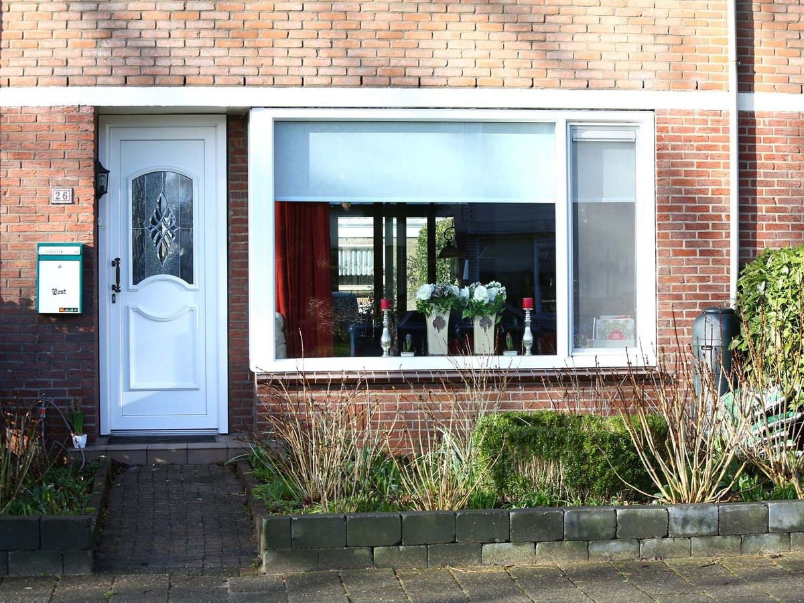
Je kozijnen zijn aan vervanging toe
Oud, koud, tochtig of weer aan een schilderbeurt toe. Vervang ze in één keer door kozijnen waar je jaren mee vooruit kunt.
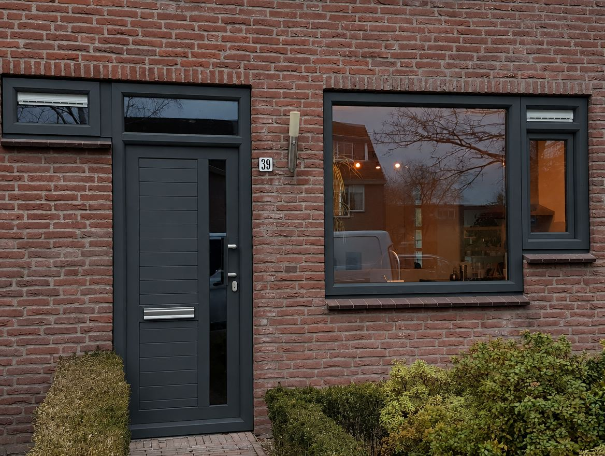
Betere isolatie met Vierplus®-glas, een lagere energierekening, bijna geen onderhoud en een hogere woningwaarde.
Ook in termijnen te betalen, vanaf €35 per maand.
Liever eerst bellen? 055 303 49 90
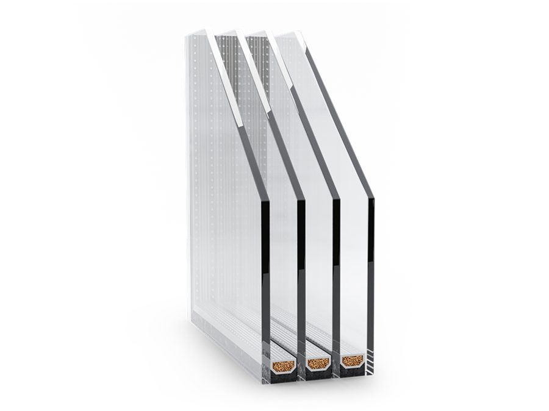
Betere isolatieWarmer en minder gehorig. Geen tocht en geen koude plekken bij het raam.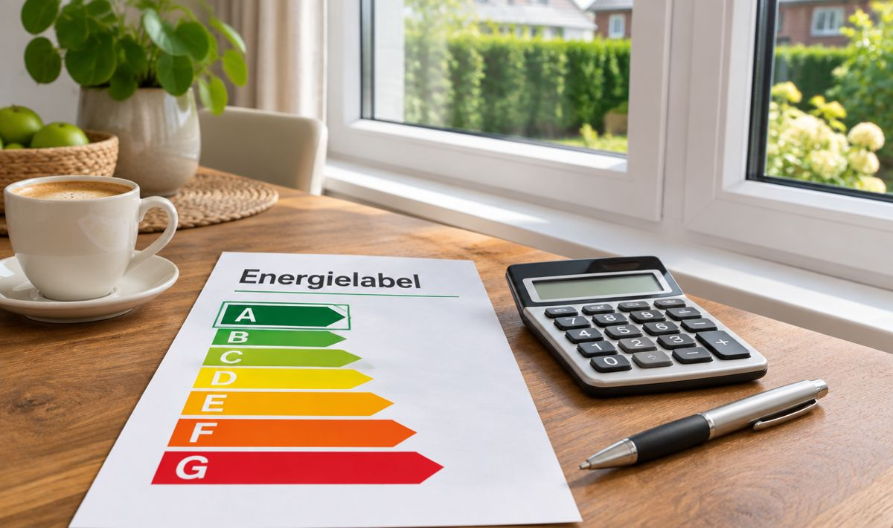
SubsidieregelingenSoms betaalt de overheid mee. Wij kijken wat er kan.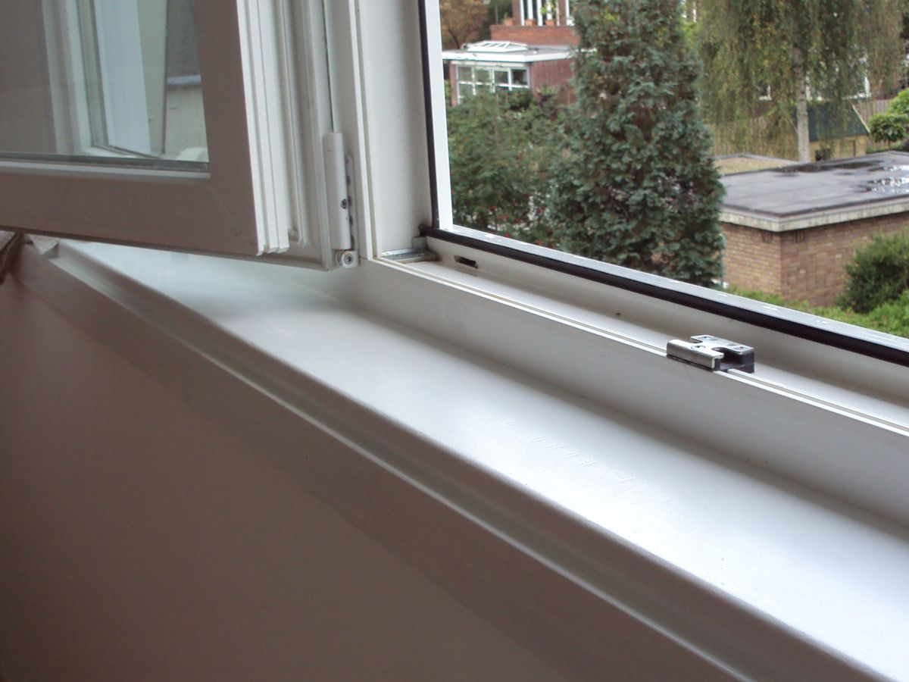
Lagere energierekeningMinder warmte die weglekt, dus minder stoken.OnderhoudsarmGeen schilderwerk en geen houtrot meer.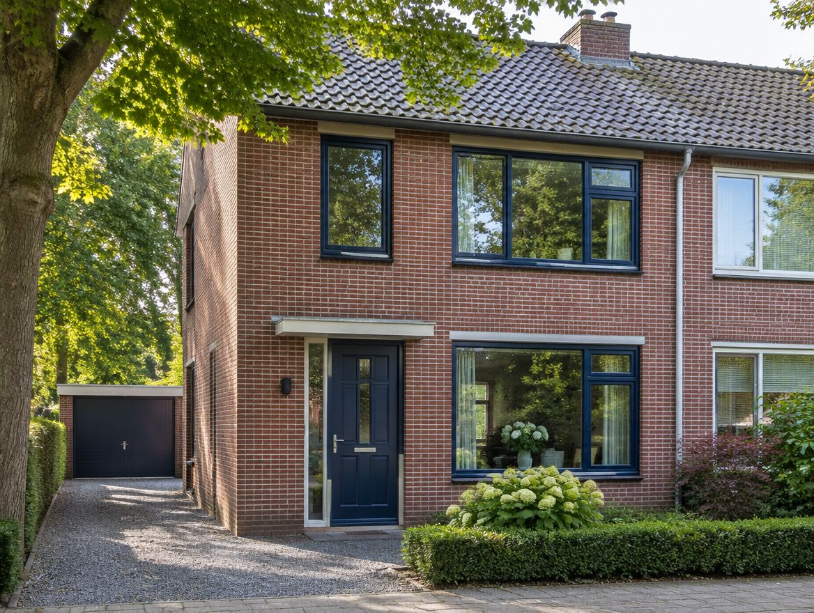
Hogere woningwaardeEen beter energielabel maakt je huis meer waard.Moderne uitstralingStrak, in de kleur die bij je huis past.Oude kozijnen en oud glas zijn vaak de koudste plek van je huis. Onze kozijnen zijn gemaakt voor Vierplus®-glas: vier glasbladen in plaats van twee. De warmte blijft binnen en het geluid van buiten blijft buiten.
Voor isolerend glas en kozijnen kun je soms ISDE-subsidie krijgen, en sommige gemeenten hebben een eigen regeling. Onze adviseur checkt in het adviesgesprek of jij in aanmerking komt.
Wat niet weglekt, hoef je ook niet bij te stoken. Met goed isolerende kozijnen gaat de thermostaat omlaag en je energierekening ook. Onze adviseur rekent uit wat het voor jouw huis scheelt.
Houten kozijnen vragen om de paar jaar schilderen, schuren en bijwerken. Dat kost je telkens weer tijd en geld. Op de lange termijn is vervangen goedkoper. Kunststof kozijnen houden hun kleur, af en toe schoonmaken is genoeg.
Nieuwe kozijnen met goed glas verbeteren je energielabel. Een goed verduurzaamd huis is meer waard en trekt meer kopers. En het oogt meteen verzorgd.
Klik op een kleur en zie dezelfde gevel in die kleur. Strak antraciet, klassiek wit of houtnerf: binnen en buiten kun je een andere kleur kiezen.
Dit zijn onze voorraadkleuren, met houtnerf aan de buitenkant. Andere kleuren kunnen op aanvraag. De adviseur neemt de kleurstalen mee naar je huis.
| Houten kozijn | Kunststof van Pluskozijn | |
|---|---|---|
| Isolatie | Hangt af van het glas | Gemaakt voor Vierplus-glas |
| Geluid | Hangt af van het glas | Minder gehorig door vier glasbladen |
| Onderhoud | Om de paar jaar schilderen | Af en toe schoonmaken |
| Houtrot | Kan ontstaan | Kan niet |
| Uitstraling | Echt hout | Strak, of met houtnerf |
| Kleur | Opnieuw verven om te wisselen | Binnen en buiten apart te kiezen |
| HR++ | Triple | Vierplus | |
|---|---|---|---|
| Glasbladen | 2 | 3 | 4 |
| Isolatie | |||
| Geluid dempen | |||
| Toekomstbestendig |
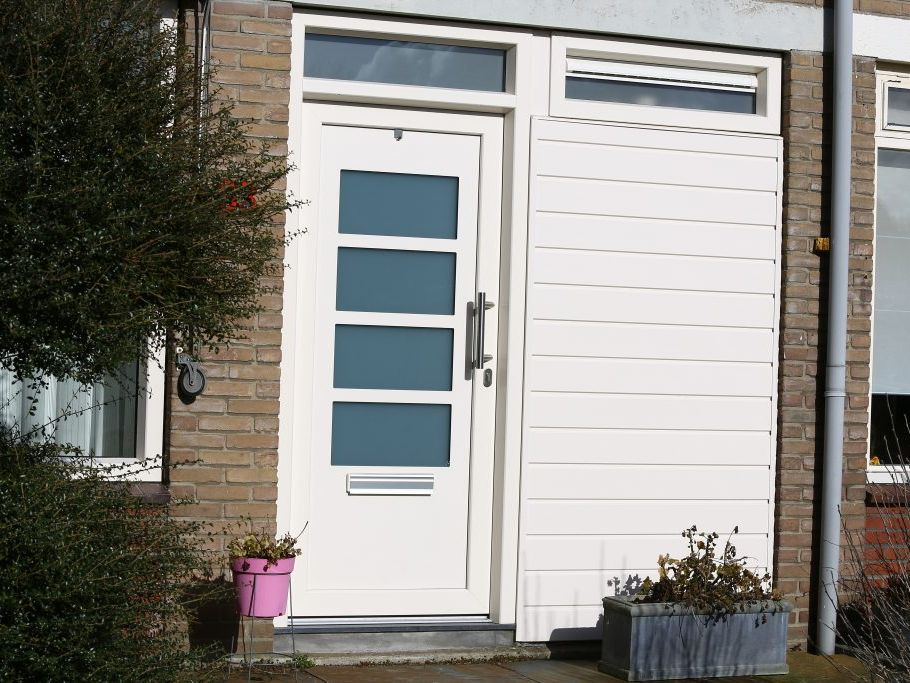
Woon je in Rotterdam of de Drechtsteden? Onze adviseur komt bij je thuis langs. Je kozijnen maken we op maat en ons eigen team plaatst ze bij jou.

Oud, koud, tochtig of weer aan een schilderbeurt toe. Vervang ze in één keer door kozijnen waar je jaren mee vooruit kunt.
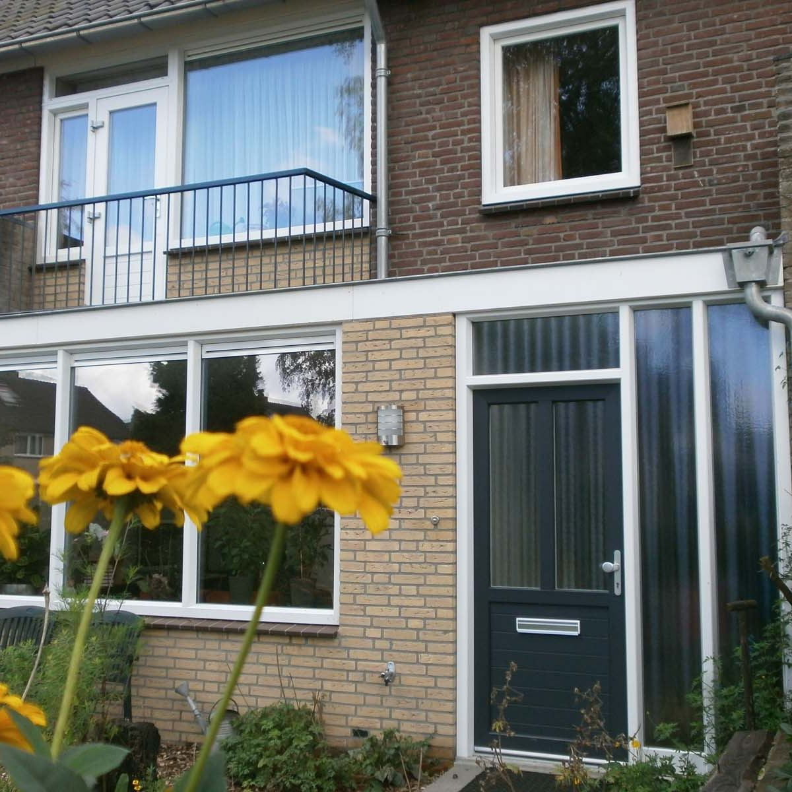
Doe het voordat je erin trekt of de vloer erin ligt. Dan is je huis meteen warm, stil en af.
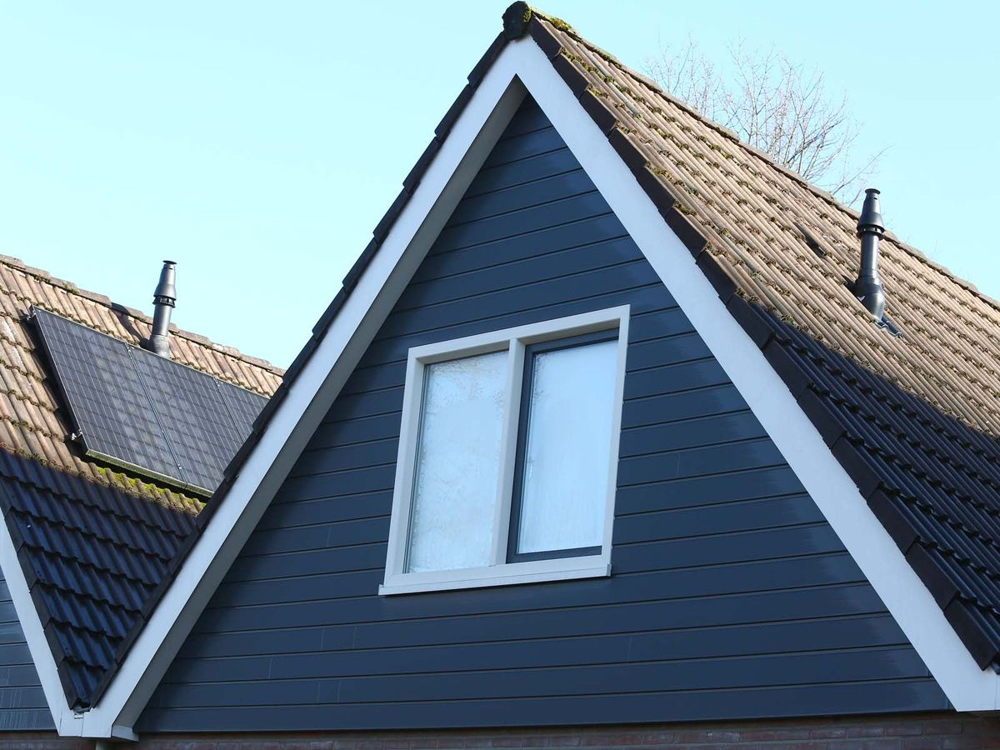
Spouwmuur, dak of een warmtepomp? Goede kozijnen horen erbij, anders lekt de warmte via de ramen weg.
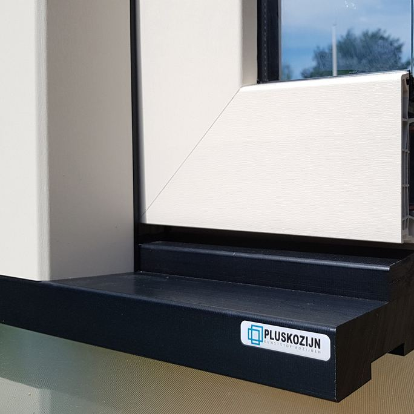
Mooi design, goed geplaatst en afgewerkt. Het is erg mooi geworden en het huis is heerlijk warm dankzij het triple glas.
Alles verliep soepel, ook de nacontrole. Het is nu veel warmer in huis en schilderen is ook verleden tijd.
11 kozijnen, twee deuren, een luifel en een dakgoot. Ondanks het tekort aan grondstoffen snel geleverd. Elke middag werd alles opgeruimd en netjes achtergelaten.
Van het eerste contact tot de oplevering goed geregeld. Alles is strak geplaatst en ze hebben de werkplek ook schoon achtergelaten.
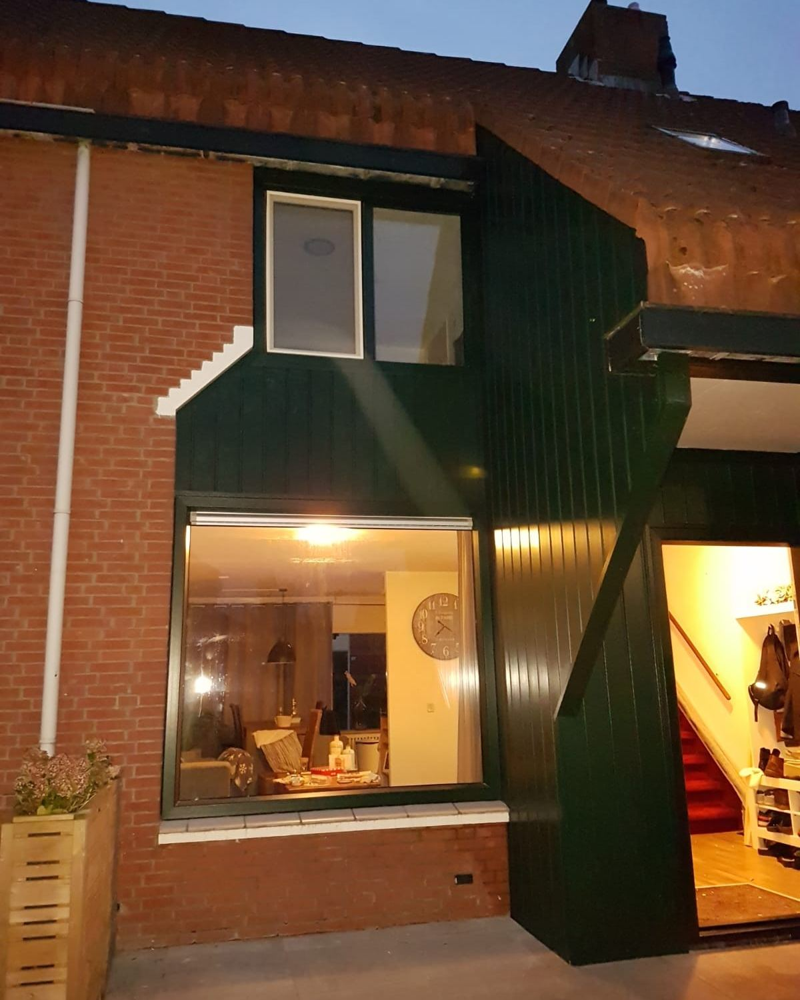
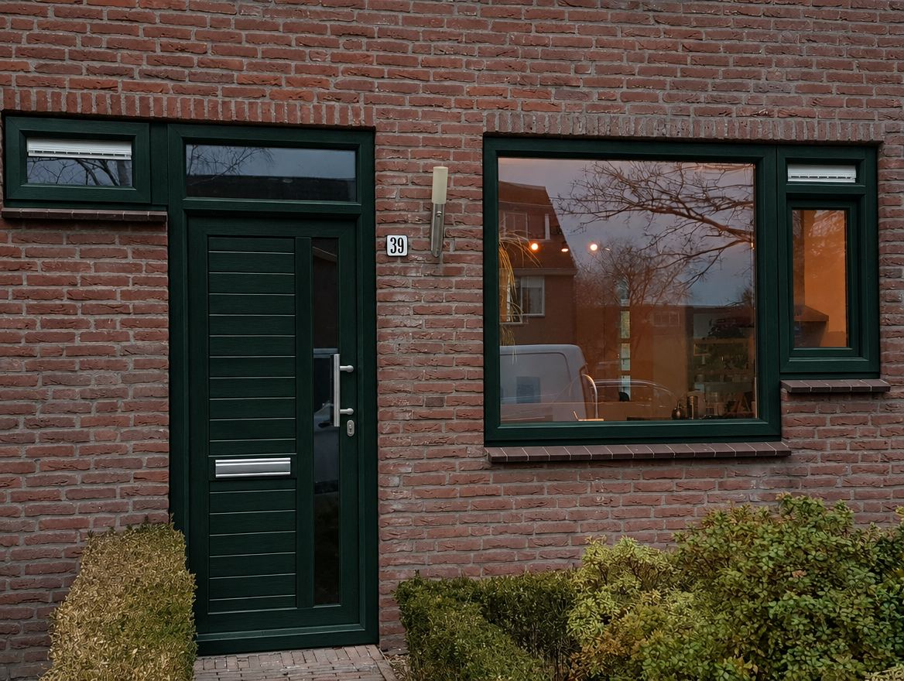
Dat hangt af van je huis, je huidige glas en hoe je stookt. Onze adviseur rekent het voor jouw huis uit.
Soms wel. Voor isolerend glas en kozijnen bestaat de ISDE-subsidie, maar de voorwaarden veranderen elk jaar. Onze adviseur kijkt met je mee wat er voor jouw huis geldt.
Ja. Meer glasbladen en goed sluitende kozijnen houden geluid van buiten beter tegen. Vooral aan een drukke straat merk je dat.
Glas met vier glasbladen en drie gevulde spouwen. Het isoleert beter dan HR++ en triple glas. Onze kozijnen zijn er speciaal voor gemaakt, met een inbouwdiepte van 12 centimeter.
Ja. Schilderen hoeft nooit meer. Af en toe schoonmaken en het hang- en sluitwerk soms een druppel olie geven is genoeg.
Ja. Je kunt je nieuwe kozijnen ook in termijnen betalen, vanaf €35 per maand. De adviseur rekent het voor jouw situatie uit.
Dat hangt af van het aantal kozijnen, de maten, de kleur en het glas. Onze adviseur meet alles bij je thuis op, daarna krijg je een offerte op maat.
Ja. Je kunt ook een voordeur, achterdeur of de kozijnen van je dakkapel laten vervangen.
We komen in Rotterdam, de Drechtsteden en omgeving bij je thuis langs voor advies.
Of bel 055 303 49 90